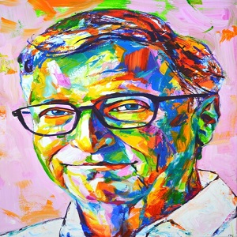

Bill Gates nació el 28 de octubre de 1955. Es hijo de William H. Gates Sr., un destacado abogado, y de Mary Gates, profesora de la Universidad de Washington y directora del First Interstate Bank. Con ellos y su hermana, dos años mayor, vivió en la ciudad de Seattle, en el estado de Washington. Hasta sexto grado fue alumno regular de un colegio público.Cursó estudios en la escuela privada de élite de Lakeside, en Seattle, esta escuela tenía ya una computadora en el año 1968, lo que le permitió a Gates tomar contacto con la máquina y aficionarse a la informática. También en Lakeside conoció a Paul Allen, con quien más tarde fundaría Microsoft.
El 4 de abril de 1975, siendo aún estudiante en la Universidad de Harvard crea la empresa de software Microsoft. En 1976 abandonó la universidad y se trasladó a Albuquerque, sede de MITS, para pactar con esa empresa la cesión del 50 % del lenguaje para computadoras Basic. Al año siguiente, se enteró del éxito de la empresa Apple y de que necesitaban un intérprete de Basic.

Imagen de Bill Gates
Proyectos
Autor:Piero Herman Linares Rojas
Sus proyectos son:
1.Fundación Bill y Melinda Gates:
El 16 de junio de 2006 hizo pública su intención de abandonar sus labores diarias al frente de Microsoft hacia el 2008 para dedicarse por completo a su fundación
2.Donaciones personales
En 1999, Gates donó 20 millones de dólares al Massachusetts Institute of Technology (MIT) para la construcción de un laboratorio de computación llamado "William H. Gates Building", diseñado por el arquitecto Frank Gehry.
3.Eventos deportivos de caridad
El 29 de abril de 2017, Bill Gates se asoció con la leyenda del tenis suizo Roger Federer para participar en el Match for Africa 4, un partido de tenis no competitivo que se disputará en el Key Arena de Seattle con todas las entradas agotadas.
4.Fundador de Microsoft:
Tras el lanzamiento del Altair 8800, Bill Gates llamó a los creadores del nuevo microordenador, Micro Instrumentation and Telemetry Systems (Micro Instrumentación de Sistemas de Telemetría) (MITS), para ofrecerles una implementación del lenguaje de programación BASIC para el sistema. Tras la demostración, MITS accedió a distribuir Altair BASIC.